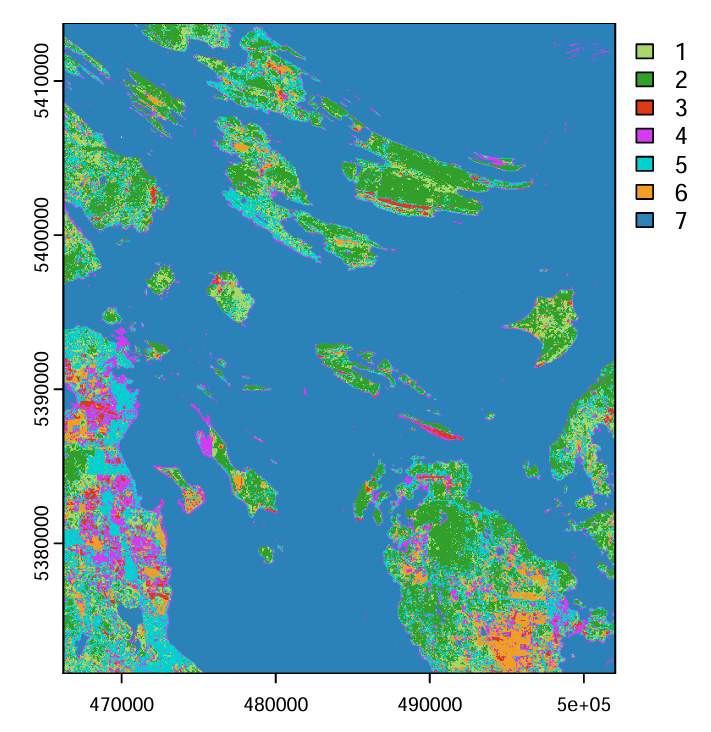
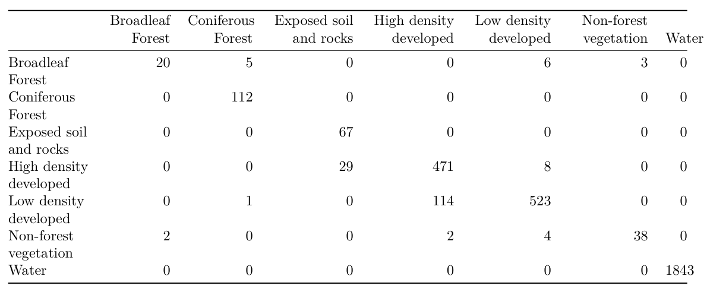

成果图像

Landsat 9 最大似然分类（MLC）土地覆盖专题图（30m 分辨率）

混淆矩阵 — 总体精度 94.6%，超75%达标线
项目描述
- 使用 R（RStoolbox、terra、sf、caret）对 Landsat 9 多光谱影像（6 波段地表反射率）进行监督分类
- 自主目视解译并手绘 79 个训练多边形，涵盖 7 类地表覆盖类型：阔叶林、针叶林、裸土/岩石、高/低密度建成区、非林木植被、水体
- 设计分层随机抽样方案，按 70/30 比例拆分训练集与验证集，按类别平衡像元数量以避免大类别偏差
- 提取 24,000+ 像元多波段反射率数据，绘制各地物类型光谱特征曲线（均值及 5%-95% 置信区间），验证训练样本质量
- 应用最大似然分类算法（MLC）完成全图像素级分类，生成 30m 分辨率土地覆盖专题图并导出为 GeoTIFF
- 基于混淆矩阵手动计算总体精度（Overall Accuracy）、制图精度与用户精度，最终总体分类精度达 94.6%
- 诊断出裸土/岩石与阔叶林为误分类主要来源；在 QGIS 中结合 Google 卫星影像进行目视质量核查
R · RStoolbox
terra · sf · caret
最大似然分类（MLC）
监督分类
混淆矩阵
精度 94.6%
Landsat 9
QGIS